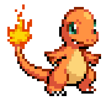

HISTÓRIA
Uma floresta está perdendo sua energia vital e corre o risco de desaparecer. A chama que mantém a vida no local está se apagando, colocando tudo em perigo. Charmander, com seu fogo especial, embarca em uma missão para restaurar esse equilíbrio. Ao longo da jornada, ele precisa recuperar chamas espalhadas pelo caminho e superar diversos desafios. No final, ao reunir toda a energia necessária, Charmander consegue reacender a vida da floresta e trazer de volta sua harmonia.
INFORMAÇÕES DO JOGO
OBJETIVO: Restaurar a energia da floresta coletando chamas.
DESAFIOS: Desviar de obstáculos e não perder todas as vidas.
FINAL: Coletar as chamas para chegar ao final e reacender a vida da floresta.
PERSONAGEM

Charmander
JOGADOR
Pokémon do tipo Fogo. É um lagarto com uma chama na cauda, cuja intensidade reflete seu estado de saúde e emoções. O responsável pela missão de restaurar a energia a floresta.